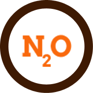
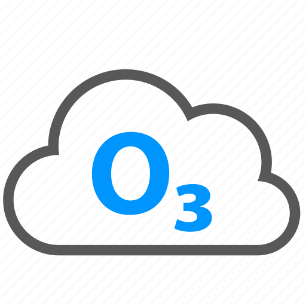
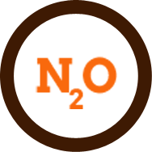
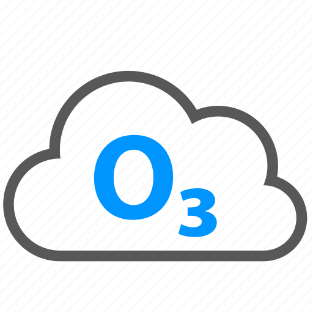

Air Pollution Meaning
What is air pollution? Air pollution occurs when solid particles and gases mixes with the air. These particles and gases are often called air pollutants. These air pollutants come from numerous places, such as car emissions, factory-made chemicals, and mold spores.
Air Pollutant Types
There are 4 types of air pollutants, namely particulate matter, nitrogen oxides, ground-level ozone and sulphur oxides.
 



Particulate Matter
- is defined as solids and liquids suspended in the air. Particulate matter can be measured with PMn with n being a diameter in microns. This number means that the particulate matter has a diameter less than n. For example, PM10 describes a particulate matter with a diameter less than 10 microns, or 1/100 of a millimeter. Fine particles are measured by PM2.5 and ultrafine particles by PM0.1. PM10 and PM2.5 are considered the most dangerous type of particulate matter as it is small enough to not be seen by the naked eye but large enough to damage our lungs. Particulate matter can come from dust from roads, and solids from factories. Aside from man-made sources, however, it can also come from natural sources, such as soil and volcano emissions. Particulate matter depending on size can reach your lungs, air sacs, and even bloodstream. Symptomps may include irritation of the nose and throat. This type of air pollutants can bring toxic chemicals into your body and cause lung diseases, heart diseases and even cancer.
Nitrogen Oxides
- are a type of gas typically from man-made sources such as power stations, vehicles and roads with traffic. This type of pollution can irritate the nose and throat more than particulate matter and can cause allergies, asthma and COPD (Chronic Obstructive Pulmonary Disease.)
Ground-Level Ozone
- is a gas composed of 3 oxygen atoms (O3). In the uppermost levels of the Earth's atmosphere, ozone absorbs harmful ultraviolet radiation. However, it can be harmful at ground level. Ozone is formed from the chemical reaction between the Sun's rays and organic gases such as nitrogen oxide, another type of air pollutant. It can also irritate the lungs, reduce lung capacity, and bring discomfort to breathing. It mainly triggers asthma but also causes COPD and pneumonia.
Sulphur Oxides
- are another type of natural gas. It is colorless and has a sufficating smell. It mainly comes from the burning of fossil fuels. It, with nitrogen oxides, helps ozone form. It can cause coughing, mucus, inflamation of airways and tightness in the chest. It can worsen COPD, and trigger asthma.